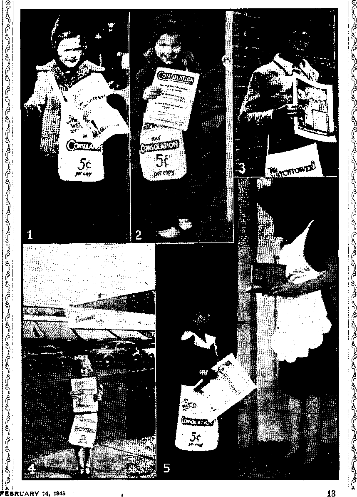

“The Guardian and Avenger of Morals and
Illegal Interference with Education
Illegal, Divisive, Provocative
Dandelion JJubber and Black Cotton
< “Jehovah's witnesses Are Always ■ ;
“Thy Word Is Truth”
Time to^Go Over to the Metric System
The Nonexistent Kingdom of Hungary
Horthy Before the Paper-Hanger
•- Ruflnus Tyrannius, Translator of Origen
Presenting “This Gospel of the Kingdom” Practical Illustrations of Bodies of Talks
Published every other Wednesday by
WATCHTOWER BIBLE AND TRACT SOCIETY, INC. t 117 Adams SLt Brooklyn 1, N. Y., U, S. A,
OFFICERS
President N. H. Knorr
Secretary w. E. Van Amburgh
Editor Clayton J. Woodworth
Five Cents a Copy a year In the United States $1.25 to Canada and all other countries
NOTICE TO SUBSCRIBERS
Remittances: For your own safety, remit by postal or express money order. When coin or currency is lost in the ordinary mails, there is no redress. Remittances from countries other than those named below may be made to the Brooklyn office, but only by International postal money order.
Receipt of a new or renewal subscription will be acknowledged only when requested. Notice of Expiration is sent with the journal one month before subscription expires. Please renew'promptly to avoid loss of copies. Send change of address direct to us rather than to the post office. Your reouest should reach us at least two weeks before the date of fsgue with which it is to take effect. Send your old as well as the new address. Copies will not be forwarded by the post office to your new address unless extra postage is provided by you.
Published also in Greek, Portuguese. Spanish, and Ukrainian.
OFFICES FOR OTHER COUNTRIES
England 34 Craven Terrace, London, W. 2
Australia 2 Homebush Rd., Strathfield, N. S. W. South Africa 623 Boston House, Cape Town
Mexico Calzada Melchor Ocampo 71, Mexico, D. F. Brazil Rua Licfnio Cardoso 330. Rio de Janeiro
Argentina Calle Honduras 5646-48, Buenos Aires
Entered as second class matter at Brooklyn. N. Y.t under the Act of March 3, 1879.
, In Brief
The Right to Stone Protestants '
♦ One of the least lovely traits about the Roman Catholic Hierarchy is the fact that every priest, having been indoctrinated with the idea that it is perfectly all O.K. to murder Protestants, disburses that information to sundry and divers members of his flock. Thus the Christian Century carries a letter or dispatch from its correspondent in Mexico city regarding an occurrence at Jalapa, in the state of Oaxaca. It seems that there is a little Protestant chapel there, and— ■
While holding a service, the congregation was surrounded by a village mob led by the singers of the local Roman Catholic church. These fanatics stoned the little chapel and tried to break down the door and the windows. The town police succeeded in dispersing them and advised the Protestants to confine themselves to their homes in order to avoid street disturbances. The Protestants did so, but a group of about 30 men, women and children decided that the village was unsafe and tried to escape from it at night. They were discovered and overtaken by a group of fanatics on the road. The men were beaten into impotence and the women raped.
Artificial Rain Since 1924
♦ The first broadcasts from the Watchtower station WBBR were made in February, 1924, and in that year, and in all subsequent years, the Watchtower gardens adjacent thereto have furnished fresh, delicious foods for the Bethel tables. Supplied from artesian wells, these gardens are provided with artificial rains constantly in the growing season; a series of perforated semirotating pipes throw thin streams high in the air, and the gentle shower that follows falls upon the growing plants beneath for as many hours a day as may be needed. But natural rains, when they come, are better for gardens than artificial ones.
“And in His name shall the nations hope.”—Matthew 12:21, A.N. V.
Volume XXVI Brooklyn, N» Y<» Wednesday, February 14, 1945 , Number 6$3
“The Guardian and Avenger of Morals and Good Behavior”
BEARING the title “A World to Reconstruct7', the Roman Catholic Hierarchy has issued an official volume on the pope’s peace points. The preface was written by the “Most Reverend” Amleto Giovanni Cicognani, apostolic delegate to the United States, and in the preface Mr. Cicognani says: “The Church is the guardian and avenger of morals and good behavior, as she is of faith.” This is intended as a partial examination of this large subject. .
Morals and behavior rest squarely upon education, and it is to be hoped that the future morals and behavior of America will not be the same as Cherbourg, always under the guardianship of the “church”, where, as saith the New York Daily News: ■
Eight radio jeeps and two scout cars check up oh Cherbourg’s five female business establishments which still operate as licensed premises for the local population, but which have been ruled out of bounds for the military personnel.
The public schools of America are the places where the boys and girls are made Americans, and, though they have not done a perfect job, they are as far ahead of any Catholic schools as a featherbed ■ is ahead of a thunderstorm. Therefore the following, from the parish bulletin, “Queen of Angels,” 226 East 1.13th street, New York city, by the “Reverend Father” Christopher, O.F.M., Cap., is vicious:
The 20,000 public schools today as we see them is not a product of Washington or Jefferson or Lincoln, or the founding fathers. These men advised their fellow citizens to found schools so that through religion and morality the form of government might endure. Washington wouldn’t know a public school as it exists today.
In the year 1940 there were 26,759,099 children attending the American public schools, while the number of parochial schools was so small that works of reference do not even mention them. In the year 1943 the United States had 42,615 post offices, and certainly had that many schools, so that the statement that America has “20,000 public schools today” is an insult to the intelligence of those from whom Mr. Christopher makes his living.
Consider the Facts
The five largest cities in the United States, New York, Chicago, Philadelphia, Detroit and Los Angeles, have a total population of 15,910,866 and they have 2,344 public schools, or one for each 6,800 of the population. On the same basis, in the 3,459 other American cities of 2,500 to 1,000,000, and an aggregate population of 58,512,836, there are 8,605 more public schools, or 10,949 in all the urban centers. That leaves 39,1.51 communities or villages of less than 2,500 with one school each, and makes the grand total of American public schools at least 50,100, or two and a half times Mr. Christopher’s wild and jealous guess. In America’s public schools there are 880,001 teachers, according to the census returns. That would make a general average of 18 teachers to a school, and, as thousands of the schools have only one or two teachers each, that is ample. Mr. Christopher should attend America’s public schools, and study.
At Pittsburgh, Pa., the “Reverend Father” Thomas F. Coakley, of the Sacred Heart Catholic Church, preached , a sermon in which he indicated his dis-1 pleasure with Section 3901, Pennsylvania *school^code of 1911, which states:
f At least 10 verses from the Holy Bible shall be read or caused to be read, without ■=- comment, at the opening of each and every * public school, upon each and every school day, - by the teacher in charge.
His statement was that this nonsectarian Bible-reading prevents the teaching of “religion”. The way he put it was, “My argument is that the code should be changed so as to permit teaching religion.” What he meant was that he thinks that each of the 256 sects should have a chance to indoctrinate the students with what they believe. He vrould certainly like to do it himself, and, of course, would want all others to have the same chance. The result would be, since there are only 200 days in a school year, that 56 of the sects would be shut out, and, horrors, possibly Air. Coakley’s.
Air. Coakley went on to explain, “What I would like is to have religion taught in public schools just like history or mathematics.” Thus, he wants children that have been taught 3 times 1 equals 3 to learn that the answer is not 3, but 1. He also wants them to learn from the Bible that “God only hath immortality” and then to get religion and learn that everybody has it, the same as the Devil taught Eve. And so ad infinitum. Also, he would probably wish religion taught in Alother Hubbard dresses, but Penn. sylvania law prohibits public school teachers from the wearing of any kind of religious toggery or hardware.
The Cause of Juvenile Delinquency
In an address in Denver, Colo., the “Most Reverend” Edwin V. Byrne made the statement:
We have not allowed religion to be taught in public, schools, and now we are bearing the fruits thereof.
Besides this “lack of religious instruction in schools” and “irreligious literature” Air. Byrne mentioned “motion pictures which spread irreligion and immoral examples”. This latter was a bad break, because everybody know?s that the motion picture industry is under the strictest possible control and censorship of the Roman Catholic Hierarchy. Still, if Air. Byrne wishes to tell the truth about his owm racket, this is a free country and he should be allowed to do it. But his statement that the current juvenile delinquency is due to lack of teaching religion in the public schools will herein be shown to be the exact opposite of the truth, and that it is almost wholly due to the teaching and practice of religious hypocrisy in the relatively few parochial schools.
In an ordinary year there are 8,760 hours, of which, in a school year of 200 days, 1,200 are devoted to attendance at the public school. Allowing 9 hours daily for sleep, there are still 4,275 hours in the year in which the child may eat, do chores, attend church, or whatever else his parents may wish him to do. The responsibility of what is done with that time is up to the parents, and not up to anybody else at all, and, as will be noted, it is almost exactly one half of the child’s total hours. The religionists Are not satisfied to put the pressure on the parents to see that the child gets religious instruction. What they wish is to seize some part of the 1,200 hours that belong to the child and which the state says truthfully that he needs to qualify him for usefulness to himself, his family and his fellow men. .
Forcing the child to lose time in school to receive instruction which cannot be legally given in school during school hours is the meanest kind of robbery. Why upset school schedules, by trying to work out a “released time” arrangement for each of the 256 interested sects ?
Illegal Interference with Education
The Roman Catholic Hierarchy has no respect for any law of God or man. In the city of Baltimore the “Reverend Father” William Kailer Dunn had the unmitigated nerve to write to the principals of all the public schools in the city to tell them that October 20-22 had been set aside as days of retreat for all Roman Catholic students, and to these students:
You will not lose credit or anything of great importance in your work. The program lasts until noon. After that you may go home for the rest of the day. ,
That is like ope man going into another man’s home and telling the second man’s wife to come with him, and that for the remainder of the day she will not need to cook or look after the children or do anything else. Moreover, she would nqt lose anything by doing as she was told!
An idea of the results obtained when religion sticks its nose into something that is none of its business may be obtained from the following letter from ■ a taxpayer regarding an incident which occurred in public school No. 37, in Jersey City, N. J.:
My boy came home from school for his lunch on Monday. His mother noticed that instead of eating his lunch as usual he just nibbled and was fretful. Questioning him what was the matter, the tears welled to his eyes and he told of the following incident:
During the morning in several of his classes the teachers asked the boys who had not gone to church that morning to stand up. The boy has been brought up to tell the truth under all circumstances. He stood up. The teacher questioned him why he had not gone to church, and proceeded to castigate him, to criticize his parents for not sending him to church, humiliating him before the class, and, in one instance, the teacher penalized him further, ordering him to bring in on the following day a list of the days of obligation. The school referred to is a public school in Jersey City, not a parochial school.
We send our boy to a public school because we, ourselves, want to have the care of his religious training and not to entrust it elsewhere. From much that I have heard and read it seems to me that we are in a war to preserve the four freedoms, among which are religious freedom. The public school supported by all the taxpayers is not the place for religious training.
If but one teacher asked the question I could easily attribute it to individual religious zeal; but when several teachers on the same day, which was “All Saints’ Day”, ask the same question, there is, to me, an indication that this is by direction of some superior, or shall we say invisible government.
To avoid the persecution of my boy, who has still a number of years to finish his schooling, I am reluctant to name the school, the teachers, or my name; but it is these gestapo and indoctrination methods that we are presently engaged in battling elsewhere in the world. Of what good is the sacrifice of thousands of lives and the untold suffering if right in our back yards we are raising the same kind of stinkweeds? Why should the seeds of prejudice be sbwn in the name of Him whose governing principle was love, not hate and intimidation!
Illegal, Divisive, Provocative
Neither God’s law nor the laws of Jersey City, nor of New Jersey, nor of the United States recognize “All Saints’ Day” in any manner whatever, and the teachers’ joint conspiracy to operate the public schools as parochial outfits was wholly inexcusable and provocative.
As showing the lengths to which these buccaneers will go, in a village in Ohio a little six-year-old girl came home from school and told her mother that they took the first grade over to the Catholic church that morning. The mother said, “They took you over to the Catholic church? What did they take you over there for?” The child answered, “To see the father.” “To see the father?” The mother was indignant.
What is going on in the public schools is also going on in the nonsectarian colleges. Under one pretext or another divisiveness is at work. In the College
of the Pacific, Stockton, Calif., a Catholic chapel was installed. Why not a separate one for each of the other 255 sects ? Also, at the University of Chicago, a Jew and a Baptist (both of them probably Jesuits) gave lectures on Thomas ^Aquinas and straightway thereafter, as , result of the interest aroused, they ,, installed a full-time Catholic chaplain in the university. Same idea! A similar - Wing took place at the University of ~ Southern California, where, instead of ' trusting Protestant honesty and scholar-"ship, a man described in the Los Angeles
Times as a “quiet-mannered priest” was put in charge of the Graduate School of Library Science. That was good of the Times to describe his manners. What were the manners of those bead-rattlers at Jersey City that sent home that little fellow with tears in his eyes?
The Bible Hated and Feared
If anybody knows the teachings of the Roman Catholic Church it must certainly be the cardinals. In practice the popes make the cardinals and the cardinals in turn make one of their own number into a pope. Nicholas Patrick Wiseman, cardinal 1850-1865, in his lecture on “Principal Doctrines and Practices of the Catholic Church”, said:
The history in every single case of Catholics going over to the Protestant church is simply this: That the individual by some chance or other, possibly through the ministry of some pious person, became possessed of the Word of God, of the Bible; that he perused the Book; that he could not find in it transub-stantiation or auricular confession; that he could not discover in it one word of purgatory or the worship of images. He perhaps goes to the priest and tells him that he cannot find these doctrines in, the Bible. His priest argues with him and endeavors to convince hijn that he should shut up the Book that is leading him astray; he perseveres, he abandons the communion of the Church of Rome.
Mr. Wiseman was archbishop of Westminster during the last 15 years of his life, and in earlier years a professor of Oriental languages and rector of the English College at Rome; so he knew what he was talking about.
At the present there is a new Catholic translation of the Bible; and a dispatch from South Bend, Ind., says that at the national meeting there of the Catholic Biblical Association of America “plans were considered for increased reading of the Bible by Catholics in the United States”. The lady who sent in the clipping remarked:
It seems laughable that the “oldest religious group in Christendom” should suddenly decide that the reading of the Bible by Catholics in the United States is so important. Now, why? I was one, but thanks to Jehovah and His Son, Christ Jesus, my eyes have been opened. While I was in that devilish organization, we were taught that only the clergy could know all the answers to our questions. What a laugh! It surely took them a long time to give a bit of educational instruction to their populace.
Writing in the London Catholic Herald, R. A. Dean, of 82 Worthing • Bead, Horsham, Sussex, England, said:
I have been a Catholic for sixteen years and I have never heard a public exhortation to read the Bible or listened to a sermon on it, and this has always surprised me.
One reason why Catholics know nothing about the Bible, despite Jesus’ own prayer and statement, “Sanctify them through thy truth: thy word is truth” (John 17:17), is the position taken by the Denver Register in its issue of September 19,1943, and which flatly eon-tradicts Jesus’ words:
The Bible is not infallible; but the Catholic Church is infallible in determining what the Bible and Catholic tradition teach. '
One or the other, Jesus Christ or the Register, is mistaken.
Parochial Schools Are Godless
Any organization that puts' itself above the Word of Almighty God is Godless, no matter what else it teaches, and so, in reason and in fact, the parochial schools are truly Godless. Rather, they do have a god, but he is the “god of this world”, the Devil. (2 Corinthians 4:4) In every state the Catholics are working every which way to get free bus rides for parochial pupils. They should not be given this weapon wherewith to help destroy American liberty. Everychild taught in a parochial school is a potential menace to the country. He is taught that the priest can order Almighty God about as he pleases, and that God must obey. The child comes to believe that the Roman Catholic Church is god and that it is not necessary for it to be obedient to any human laws whatever.
In the state of Kentucky the courts decided that it was illegal to Use public funds to transport children to private schools. The politicians got around that by passing a law giving other politicians “discretionary power to use county road funds for’bus service for any children attending school under the state compulsory'education act, if they live .more than a reasonable walking distance from schools where sidewalks are lacking”. This was an evasion, pure and simple.
In New Jersey the State Supreme Court, by a vote of two to one, held unconstitutional a law requiring boards of education to provide free transportation for children attending parochial and other private schools. The American Civil Liberty Union’s brief to the court said on this case:
It is well known that the Roman Catholic Church had long endeavored to obtain this particular legislation, but I submit that it is contrary to a very fundamental concept of our system of government that should be jealously guarded. To hold that money raised by taxation for a free public school system may be used for the benefit of a denominational school where the teaching of a particular religion is compulsory means that the state is thereby supporting that particular religion by helping it to be taught to the children. A relaxation of principle may lead to other inroads on taxpayers’ money provided for' a free public school system.
The word “may” in the last sentence is too mild. It should read “will certainly”. The ultimate aim of the Roman Catholic Church in the United States is to do to the public schools what has been done in Argentina. In that land today the innocent and helpless little children are all compelled by the dictator to receive the mass of superstitions and demonism that go to make up the Roman Catholic religion. This is godlessness under the guise of godliness. It is hypocrisy in its meanest form.
Nurseries of Child Delinquency
“By their fruits ye shall know them”; and the fruits of parochial training are lawlessness. The following is from the enterprising PM:
The Rev. George B. Ford, of Corpus Christi Church and Catholic chaplain at Columbia University, told the audience that child delinquency was almost exclusively a Catholic and Negro problem. During the first four months of 1943, he said, 64 percent of the juvenile delinquents in Children’s Court were Catholic.
The cat is completely out of the bag; because more and more Protestant and Jewish places of worship are being constantly wrecked, while not a Roman Catholic institution is harmed in any way. Thousands of dollars of damage has been done to churches in New York, Brooklyn, North Arlington, N. J., and elsewhere and Jewish children have been ' viciously attacked ift New York and Boston in hundreds of instances.
The Chicago Sun carried an advertisement of 2,863 Protestant ministers condemning the reign of terror in Dorchester, Roxbury and Mattapan, Mass., as a result of which little children and youths were being waylaid and beaten and the police “nit only were uncooperative in efforts to halt this incipient pogrom, but actually safeguarded the young gangsters against appre-
hensioir. because they belonged to the same “church”.
What the Protestant ministers were after was “the rejnoval of discriminatory "passages from [Roman Catholic] textbooks”. The textbook writers for paro-, chial schools have no common sense, the 1' nuns that do the teaching have no com* monjjense, the priests that run the out-. z fits have no common sense, and, of „ course, the children suffer in • conse-
v 'quence. It is all too bad, but the record
" 4 as to where the blame lies is perfectly - clear. It is with the godless parochial schools, and with the vicious textbooks used in them, which actually encourage anti-Semitism. See the textbook Bible History, pages 13, 209, 258 and 259, . written by “Reverend” Richard Gilmour, bishop of Cleveland, published by Ben-ziger Brothers, New York, and approved for use in the Catholic schools of the United States, by Pope Leo XIII.
Catholics are not all foolish. In their hearts they know, as one of their own spokesmen, Thomas F. Byron, Lowell, Mass., has said:
The parochial school was never desired by the American Catholic people, neither were they even so much as asked to say whether they wanted it or not, nor. do they for the most part regard it with any feeling but that of irksomeness now. The thinking class of Catholics would be glad to get rid of it, if this could only be done quietly and without public scandal. To the minds of nine Catholics out of every ten, the parochial school was no more needed in this country than a fifth wheel for a coach.
The World-wide Conspiracy
Conditions are so bad in the three principal Connecticut cities, Hartford, New Haven and Bridgeport, that seven Catholic priests have been assigned to sit in court and make recommendations to the judges in eas^s of juvenile delinquency. It is not necessary to have any clergy except Catholic priests on the job, for reasons that are self-evident.
Regarding conditions' in Ireland,
Michael McCarthy said courageously:
Our children are decaying under the malign blight of priestcraft. The priests seem in terror lest the fence of bigotry and isolation should be broken down. Misdirection and stultification, not education, emanates from them. The spread of conventual education is ruining Irish womanhood; the nun, like the priest, is ever on the scent of money* Seventenths of the laity are submerged; as long as the priest has power these seven-tenths will never, if he can prevent it, rise from their submergence.
Alfred Gifford, editor of the Victorian Independent, in an address on conditions in Australia, made this statement:
Ever since the system was set up Roman Catholic leaders have deliberately and constantly created dissatisfaction among their people by telling them they have a grievance. The only effect of this can be to make kindly Roman Catholics bitter against their fellow citizens. This feeling of antagonism^ and schism in the body politic, was the very thing the builders of our national system of education sought to avoid. Their idea was to educate all the youth of the state together, so as to create sympathetic understanding and avoid class feeling and conflict. On one point they could not give way. A free state must have free, unseetarian education.
Autocracies, both spiritual and political, thrive'on the ignorance of the masses; but only an educated people can make democratic government possible. When, however, a state takes any practical step toward adequately educating its children, it finds one great hindrance, often the chief hindrance, in what is called “the religious difficulty”. Certain ecclesiastical authorities demand either that the children should be left to them for education or that the state should make provision for their “right of .entry” into the schools in order to teach their peculiar beliefs. The result has been, in English-speaking countries, that the question has never been “What is best for the children?” but rather, “How shall we placate the sects?”,
Roman Catholic grievances are rooted in its impossible claims. It appears to be a
definite1 policy of the group in Italy, which rules the Roman Catholic church, to keep their people separate from their, fellow citizens in all free states by fomenting grievances.
The Results in Britain
The .evidence is endless that the Godless parochial schools are ruining the youths that have the misfortune to attend them. The results in Britain are summarized in the Ulster Protestant:
The Rev. H. D. Longbottom, of Liverpool, more than a year ago expressed the fact that Britain’s education system was a “split personality”, and not only so, but juvenile delinquency was prevalent in Roman Catholic-taught children. He even challenged Dr. Downey to publish the facts and figures. They show that in one district where cheek by jowl you have a Council school and a Roman Catholic school, that the criminality figures in the Roman Catholic school are four times as high as those in the Council school.
In another Council school in a Roman Catholic neighborhood there were no juvenile ■ delinquents, yet hard by two Roman Catholic schools had respectively 11 and 8 percent of their members charged with juvenile crimes. And in another Roman Catholic school, godly “Church” school topped the list with 23 percent of its juveniles among the young criminals ; and yet another school, Roman Catholic godly “Church” school, with 18 percent; and yet Dr. Downey says, "We shall continue to struggle for denominational schools even though we have to fight alone.
Thus “by their fruits ye shall know them”. And the results are most devastating for those trained in Roman Catholic schools. The Government erime sheets are the evidence. As one writer says, “The criminal statistics, where-ever available, must make a devout Roman Catholic sick with despair and disgust. In England, where Roman Catholics are 5 percent of the population, they furnish 16 to 67 percent of all criminals: that is 5 to 13 times more than their share.”
One can imagine a harlot saying that she “is the guardian and avenger of morals and good behavior”, but one would know right away, in a republic, that she would not dare to say it unless she knew' well some politicians who had the same morals and behavior as herself.
DURING the yuletide of 1939 Fresh dent Roosevelt and Pope Pacelli exchanged some warm and quite touching notes. The gist of the president’s correspondence appeared to be that he was mightily desirous of sending over a personal ambassador in the person of Myron C. Taylor, for more reasons than just to kiss the pope’s big toe. And what about it?
Pacelli’s reply, in a letter beginning and ending with the title “Pius PP. XII” t (the “PP ” standing for “Pater Patrum”, “Father of Fathers” in- case you’re curious), contained the following senterices which indicate how F.D.R.’s idea struck “PP.”:
As Vicar on earth of the Prince of Peace, from the first days of Our Pontificate We have dedicated Our efforts and Our solicitude to the purpose of maintaining peace, and afterwards of re-establishing it. . . .
In such circumstances We shall find a special satisfaction, as We have already informed Your Excellency, in receiving with all the honor due his well-known qualifications ■and to the dignity of his important mission, the representative who is to be sent to Us as the faithful interpreter of your mind regarding the procuring of peace and the alleviation of sufferings consequent upon the war.
Recalling with keen joy the pleasant memories left Us after Our unforgettable visit to your great nation, and living over again the sincere pleasure that personal acquaintance with Your Excellency brought Us, We express in turn Our hearty good wishes . . . etc. . . . Pius PP. XII.
Pacelli not being one head of a pair ‘ 9
of Siamese twins, but just one solitary single person, why on earth does he refer to himself as a great big capitalized “We"? Is it because the pope "believes, as popes claim, that he is the fleshly manifestation of his “god” on r(. earth, that he is at least a three-headed t" god within himself? Then that explains “Us”M For no one has a right to doubt that the pope has devoted himself body and soul to his “god”, “the god of this 'world,” who is Satan the Devil. Or hadn’t you learned about the pope’s con- cordat with Satan? As a matter of fact, the pope before Pacelli, Pius XI, almost beat him to it. Pius XI had placed the proposition before Satan, during a newspaper interview, in these words:
The Head of the Catholic Church would consider it his duty to deal with the Devil himself, to say nothing about any mortals who, hypocritically, or in reality, were merely agents of the Dictator of Diabolism [wonder which dictator—after concluding one with Stalin the pope will have signed concordats with them all], if reasonable grounds existed to support the hope that such dealings would protect, or advance, the interests of religion among mankind.
Indeed, for anyone interested in promoting religion, the Devil is the very one with which to make a pact, as he is the father and god of religion, with which he has always combatted Christianity. Satan had hoped to prevent Christianity in the first place by laying down that very proposition of Pius Xi’s before Christianity’s Head and Founder, Christ Jesus. Here is the proof, offered by the disciple Luke, in chapter 4, verses 5 to 7:
And the devil, taking him up into an high mountain, shewed unto him all the kingdoms of the world in a moment of time. And the devil said unto him, All this power will I give thee, and the glory of them: for that is delivered unto me; and to whomsoever I will I give it. If thou therefore wilt worship me, all shall be thine.
Back then, the Devil’s visible worldruling organization was the Roman Empire, under Caesar. The Devil was actually offering to place Jesus on Caesar’s throne. Bear in mind, too, that three centuries after Jesus was killed for refusing Satan’s offer, the Roman emperor Constantine, at the Council of Nice, combined religion and state. so that thereafter the Caesars might don the robes of the bishop of Rome and come to be called “Father of Fathers”.
Behold, now, as the present pope, Pacelli, maneuvers himself into the dominant position in a new world-ruling organization, the revived and fortified league of nations that shall emerge as this global war crashes to its climax. That new world-ruling system will be christened the “re-establishment of Christ’s kingdom on earth". Christ, the great Prince of Peace, emphatically refused to set up His kingdom by use of Caesar’s throne. These self-styled ‘Vicars on earth of the Prince of Peace’ have employed every unholy means to occupy it. .
This standing league with Satan has always been the Papacy’s biggest concordat.—Marley Cole, Tennessee.
Dandelion Rubber and Black Cotton ♦ Humanity is only beginning to get acquainted with some of the treasures that God has placed in the earth. A mountain type of dandelion, discovered in Turkestan some years ago, has proved to be a rubber-producing plant of considerable value. It is now being grown in all parts of Russia and yields a good crop of caoutchouc the first year planted. This means a lot in wartime, with rubber so scarce.
The Soviet embassy bulletin states that black cotton has been developed in. Russia, with many other tints ranging from reddish to green, and it is anticipated that the natural black ‘will be a more-permanent one than if white cotton were dyed black. For some years there have been American cottons with green and brown tints.
ONE of Uncle Sain’s boys in Oregon received from his parents in New Hampshire a copy of L'Action Ouvriere, a French periodical published in Manchester, N.H., and has kindly made the following translation for the benefit of Consolation readers:
Whether we want it or not, we must ascertain that Jehovah's witnesses are increasing in number and in devotion from day to day. Of which race, and of which religion, think you, do the greater number of their new members come? It is a sad thing to admit, but many of their recruits are of our own Canadian Catholics, who leave the voice which has been taught to them by the Roman Church to follow the directives of a man like them, who is more, interested in their pocketbooks than in their souls. [! ?]
After several contacts with people of all ranks, we learn that many good people ask themselves what it is that draws so many to Jehovah’s witnesses. It is certainly not because they ask less sacrifice or less effort; because, from what we can sec, the sacrifices or mortifications, if you can call them that, are not lacking on the part of these witnesses. Rain or shine the witness puts himself on one of the principal street corners, and makes his propaganda to sell his Watchtower. But it is not that the journal attracts so many persons, for the sale of the magazine seems very limited. Then we must believe that it is their example, their fidelity to their cause, that leads so many people to join them.
Jehovah’s witnesses seem to lead a life so different from others. They live a little differently because the religion which they practice is not the same as they knew from their birth, which came to them free, a gift from their parents. But instead, for the new faith which they have received they must suffer persecution and face many obstacles if they practice it faithfully and openly.
Setting a Shining Example
Jehovah’s witnesses are simply doing what we Catholics should be doing. They follow to the letter directions given them by their superior authorities. They are convinced of their cause. They defend their religion. They do not miss an occasion to speak in its behalf. They are not afraid to show the people where they stand. Their zeal for their cause is limitless.
Is this not what Catholics should be and do, for a cause which is really worth all their devotion ? for the only true religion, founded by the Lord Jesus Christ himself, and which will last to the end of time? and against which the gates of hell shall not prevail?
But instead of this, what do we see? What do we do, when the time comes to show what we stand for? By our laziness or lack of backbone, we retreat, or else, much easier, we concur with those who mock and condemn our religion. The reason we do not draw anybody to our religion is because we do not believe it ourselves. We do not follow the instructions of our Chief. We do not observe the commandments, and if, on occasion, we are asked to discommode ourselves to accomplish something for our religious cause, we do not do it.
How can we get anyone to like what we ourselves do not seem to like? This is speaking a little bit harshly, is it not? But what do you want? If this is what it takes to wake you up, then we must use these means. You Catholies who are asleep, wake up! Do something before it is too late. Otherwise, and real soon, a much greater number of sheep will be scattered, and this not so much because of the devotion of Jehovah’s witnesses, but because of the negligence of so many Catholics to practice faithfully their religion.
Ought to Be Abolished
♦ William Held, Al. D., Chicago: ‘'Vivisection is a snare and a delusion, promising much and producing little. It has no useful place in medicine and ought to be abolished at once.”
A SUBSCRIBER in California re-~ newed her subscription for this "magazine, and, remarking that her only son is just leaving for camp, narrated %■. an experience that had taken place in | her home town. One of Jehovah’s witnesses was on a street corner, engaged in the magazine work, when a person in .pants walked up to him, and, without ■ warning, slapped his face, broke his glasses and bruised his lips so that they ' bled. The pants-wearer was drunk.
Two soldiers were passing; they were just back from Guadalcanal. Immediately they “piled on the thug and made him git”, is the way the story comes in here. But the soldiers also said to him, ‘What is going on here while so many of us are shedding our blood ?” Then they turned to the young man and said, “A lot of us are getting our eyes opened, and when the war is over we will be on the street corners doing the same work you are doing,”
'A lot of the religious suckers that think, after the war is over, they can do as they wish with Jehovah’s witnesses, are going to learn something, even if it is indeed too everlastingly late'to do them any good. Nobody ever puts anything over on Almighty God and gets away with it. The “purgatory” and “hell-fire” specialists are in for the tragedy of eternity, as far as they are concerned, and with themselves, and not the witnesses, as the objects' of the Creator’s special attention and wrath.
Meantime, those that wish to prove to the Almighty that they are unfit to live now or at any other time are invited to go right ahead and do just as they see fit. They will get nowhere.
The Sweet Spirit of “St. Torquemada” ♦ The sweet spirit of “St. Torquemada” shines forth in the following taken from an organ of the Roman Catholic cult, “St. Anthony Messenger,” 15 Republic street, Cincinnati, Ohio, issue of November, 1943:
Dangerous Pests. No. 141, What can you do about people who come and preach about their faith and never give you a chance to explain yours?—J. B., San Pedro, Calif.
Thank God for helping you to save many useless words; they would be wasted on the beautiful California air. Tell them to move on. Tell with words, or with hands, or with feet, or whatever weapon is most handy. Never allow them in your home. If they annoy you, call the police. The word “hell” is a good Bible term; you might ask them to go there and tell their story to Beelzebub and his gang.
The moving cause back of this outburst of religion is, of course, alarm lest the poor sucker should really learn something; and the incitement to violence is the regular course of procedure of religion when it is face to face with Christianity.
ANXIOUS to do something to spread the good news of God’s kingdom, children of Jehovah’s witnesses volunteer their services as “magazine publishers” and door-to-door witnesses. Here are a few: 1. Ginger Howland, of Clinton, Iowa, on her corner. 2. Tootsie Gregory, same place. 3. David Elkins, of Dayton, Wash,, holding forth the Word of life. 4. Beverley Andrews, six, seems to be standing there all alone, but in reality there were thousands of other witnesses in this same city at the same time Beverley’s picture was taken, for it was at the Buffalo Assembly. 5. Alex Gouldman, of Richmond, Va., thinks maybe the lady will take the book. Well, how could she resist!
(From a Catholic’s point of view)
- TT SEEMS we have in this country our A own brand of Fascism and intolerance. r We are like the pot calling the kettle < black. We fail to see our own faults, i some of which would shame the genuine brand of Fascism against which America is at war.
. * We see the corrupt political ward heelers and their gangster methods of _ force to put their men in office using the ballot-stuffing method as one of their means of getting in power men who should be''doing time in jail, and, after serving that time, should be deported back to where Fascism was bred, while others should be deprived of their citizenship and the rights of the sacred document they abuse and desecrate.
We see it in the treatment of minorities who are really more 100-percent Americans than these tin-pot one-half-of-one-percent flag-wavers who think that sacred document was only for their own particular use. We see these Catholic and other so-called “Christian” groups, who call for tolerance only when it concerns their case but who sought to have Jehovah’s witnesses banned, and they did it until it came to the real test and to that great liberal-minded justice Frahk Murphy, whose vote was the deciding point in that case of the witnesses some time ago. But pressure was brought to bear on the radio and it was instrumental in having Jehovah’s witnesses’ programs removed, while the “Catholic Truth” period and its “question box” were allowed, even though some of that stuff was obnoxious.
Then came the other radio program where Catholic orators with silver tongues and velvet voices blasted out condemning the Soviet Union and lauding Franco, spewing their venom of malice and hate toward a nation that was struggling against all opposition and which had even a more justified cause for their revolt than we had in 1.776. And, lest we forget it, it took only two years for those bolsheviks to do that which Spain has been trying to do for 500 years—to rid itself of a corrupt clergy.
The Roman Catholic church in this land was the chief exponent of its own Fascist methods to spread that venom of malice and hate, while it allowed itself to become more corrupted with political intrigue, instead of doing the work of spreading the doctrine of Christianity and the salvation of souls. Jehovah’s witnesses are the only example of those early Christians which the church persecuted when it became powerful and a political institution and took over everything, even God and Jesus Christ, asw its own private property. Doesn’t it claim to be the only religion with the sole patent right on the name Christian? All others are “spurious imitations”. Doesn’t it still teach ridiculous stories about the lives of the “saints”, when as a matter of fact we have more real saints today, who give all they have, even their lives, in doing acts of mercy and goodness? They do not fumble with beads or thump the breast as a show of godliness. And among them are those who are maligned as being atheists by these crucifiers of character, when they are more godly and Christian than any of these Christinas charlatans whose piety7 is as sincere as that of a fishmonger who peddles his wares crying “Fresh fish!” when that same article is stinking. ■
Again we see the Fascist methods like that of the gangster who claims the sole right to run his racket in his self-imposed area. While the Roman Catholic church demands all missionaries banned from those countries where it claims sole authority, yet it seeks to invade other territories to spread its doctrines to “convert” those of other faiths to its ideas. And that is “tolerance”, but when they claim to be the only genuine article, what can one expect?
A Catholic must not read any book that is banned by the church. That is almost the best form of advertising that could be thought of. When anything is thus banned it rouses the curiosity of many. If I read the Jehovah’s witnesses’ papers, does that say I am one of that group? If so, then when I read the Koran I must also <be a Moslem. In their blind stupidity the Roman Catholic high cockalorums make themselves ridiculous even in the eyes of those Catholics who can think for themselves, and not use the brain for stuffing the skull. The head is also used for purposes other than as a hatrack. Look at all this, and it is Fascism any way you take it, yet we hear those eloquent blatherskites ranting and tearing against Communism, and to be a bit less hypocritical they mildly speak against Fascism and Nazism. They are like a person who eats garlic. Every time they speak they give themselves away. They can’t smell their own breath, but everybody else can. They bless Fascism and Nazism while they wage war on the Soviet Union. And they’ll have the nerve to say even Jehovah’s witnesses are anti-Christ, because these don’t believe in the use of icons, miraculous medals, relics, dispensations and indulgences as a means of buying the way into heaven. If the pope is really sincere in his efforts for peace and less concerned in the political aggrandizement of the Vatican State, he might show his gratitude by ordering novenas for the Soviet Union and special prayers for Stalin out of consideration of the part they took in helping to save Rome from the bombs that might have been justifiably dropped on that city.
After all, the Roman Catholic Church will eventually “make peace” with the Soviet Union, as it did in those other countries where it was banned, and this for its own security, but not out of any love or respect for those countries.
FEBRUARY 14, 1945
If Stalin were to ban the Catholic Church from the Soviet Union for subversive activities, he would have just cause to do so, but in that case the howl of “persecution” of Catholics would go up. Maybe that is why Stalin is tolerant in that respect. If the Roman Catholic Church does make peace with the Soviet Union, it will not admit it has erred.
The Nazis and Fascists only copied their methods of the Inquisition, as they copied the burning of books and Bible by the Roman Catholic clergy. And when we burn “niggers” at the stake in this country, that too is only following out an old Roman Catholic custom, also copied in Salem, when they burned “witches” in the old days. There are still “witches” and “heretics” today, which the Roman Catholic Church seeks to destroy. Those who dare write as they feel even though they speak the truth are accused of doing what they did in Russia. Well, if we judge them by what “they” did in Russia, a “bolshevik” purge in Spain could well be applied at this time to rid it of its political corruption and its corrupt Hierarchy, doing business there under the sign of the cross as a cloak to cover up the real issue of politics, Fascist and Nazi combined.
To those who would call this scandalizing the Church, let them make the most of it. If the lash stings, don’t blame the whip when it is justly applied. Let the clergy practice tolerance as forcefully as they preach it.—J. R., Rhode Island.
Science of Perpetuating Error
♦ Sir Charles Bell, professor of surgery, University of Edinburgh: “Experiments have never been the means of discovery, and a survey of what has been attempted in late years in physiology will prove that the opening of living animals has done more to perpetuate error than to confirm the just views taken from the study of anatomy and natural motions.”
THE “beast” is here! Can you count his number? The suggestion of certain anti-Catholic religionists that the - number refers to the pope of the Roman Catholic Hierarchy is not Scriptural or Biblical. It could not apply to the office of pope; the number refers to the beast, because Christ Jesus says: “Here is wisdom. Let him that hath understand' ing count the number of the beast: for it is the number of a man.” (Revelation 13:18) If the Apocalyptic number referred to the pope, we must agree that the pope is the “beast”. No one seriously believes that Pius XII is the beast described in the Apocalypse. In the visions of Daniel the prophet beasts were used to symbolize beastly human government, all anti-Theocratic. (Daniel, chapter 7) From the days of the first organized political government by Nimrod, at Babel, governments of men have included three elements: religious, political, and commercial. When we see that “the beast” consists of a government made up of different elements exercising power by force and violence to accomplish a common purpose, then we can see that the number must be applied in harmony with what the Bible shows the “beast” to be.
Satan the Devil has an organization of demons and men; and the beast is * that part of his organization which is visible to human eyes, the ruling factors in which are made up of men who are imperfect. “And his number is six hundred threescore [or 60] and six.” In Bible symbolisms six is a symbolic number representing imperfection. Now 666 (three orders of 6 together) names or 16 represents the three ruling elements in the beastly visible organization, to wit, religious, commercial, and political power. The Bible text does not say that it is the number of one human creature. And since the beast is not one human creature, the number could not be that of a man or of an office held by a single individual. It is the number of the organization of imperfect men, who form the Devil’s visible organization, all under the control of the demons of which Satan the Devil is the prince. From man’s viewpoint the “beast” numbered 666 and would represent absolute completeness, the last word that could be said in favor of a man-made arrangement for ruling the world, especially in the postwar period. But man’s plans fall far short when compared with God’s arrangement, because they are inadequate, imperfect, deficient and incomplete, as 6 is short of 7.
Note how the Scriptures place the three elements of Satan’s beastly organization; and the placing of them seems to indicate the degree of reprehensibility of each respective element thereof. The “number of the beast” reads (1). six hundred—600, and (2) threescore—60, and (3) six—6, the three numbers being denoted by three different alphabetic letters or symbols in the original Greek text of the Bible, namely xB;'. According to the order observed in the text, six hundred (x) represents the religious clergy; threescore (£), the financial giants or profiteers or commercial traffickers; while six (?) represents the professional politicians. In the Scriptures the number seven is used to designate that which is spiritually complete. Six being a symbol of imperfection, which is abominable in God’s sight, therefore reprehensible, therefore six multiplied by a hundred (=600) shows that the clergy are a hundred times as'reprehensible before God. Why? Because it was their obligation to teach the truth concerning Jehovah’s kingdom by Christ Jesus, instead of linking their hands
CONSOLATION
with the “abomination of desolation”, namely, Satan’s substitute or counterfeit for that Theocratic Government by Christ Jesus. Today the religious clergy are the bitterest opposers of Jehovah’s witnesses who proclaim that Theocracy.
The six multiplied by ten (=60) shows that the commercial element are ten times as reprehensible as the politicians, because money is power and the commercial traffickers exercise power and influence by reason of using money. The simple six represents the willing, loud-talking political class. Thus by the number 666 is designated an unholy triple combination of imperfection, resulting in an abomination in the sight of God.
Therefore, when Jesus said of the beast’s number, “It is the number of a man,” He meant to convey the thought that the thing brought forth by man instead of Jehovah’s Theocratic Government by Christ would constitute the “beast”, whose measure (number.) would be the number or designation of man and not of God. The 666, therefore, instead of referring to an individual, seems clearly to refer to the combined elements of earth, ecclesiastical, financial and political, with their hangers-on and supporters, constituting a rulership of the earth which is determined to control at any cost, and which is beastly in operation, and which, therefore, is a rule by violence. The “number” suggests selfish gain, mammon, because in olden times the value of King Solomon’s annual revenue of gold was 666 talents. (1 Kings 10:14) The dimensions of King Nebuchadnezzar’s golden idol-image, which the three faithful Hebrews refused to salute and adore, were sixty cubits high by six cubits broad. (Daniel 3:1) The ancient giant of Gath, named Goliath, who fought against the typical Theocracy under King David of Jerusalem, had a brother giant with six digits on each hand and on each foot; and such giant is therefore a picture of Satan’s visible dictatorial organization that claims to be the “higher powers”.
(1 Chronicles 20:6) Thus the number six represents secular completeness, that is, completeness according to worldly man; the designation of worldly man, in contradistinction to the divine designation.
The description given in Revelation chapter 14 is of the Theocratic Organization in exact contrast to the foregoing. The apostle John there describes the Lamb Christ Jesus, the Theocratic King, and “with him an hundred forty and four thousand” faithful followers, who have His name and the name of His Father written in their foreheads. These 144,000 members of the composite “body of Christ” belong to the royal family of Jehovah God; they are the spirit-begotten children of God; and therefore they bear His name and the name of their Elder Brother, Christ Jesus, who is the Head of the royal house. These do not have the “mark of the beast” in their foreheads, nor in their hands, nor anywhere else. (Revelation 15: 2; 20:4) They are not in sympathy with the beast; they are not children of it, and they do not support it. The man-made arrangement, the beastly system, as measured by man of this world, is symbolized by 666 (x5s', or 600 plus 60 plus 6), or three degrees of six; whereas the divine arrangement, Jehovah’s Theocratic Government by Christ Jesus, is symbolized by seven. The one is arrayed against the other as we approach the battle of Armageddon.
Having gotten the number of the “beast” and thus identified it, lovers of life and of righteousness will be able to avoid worshiping it and getting its incriminating mark. That way they will be able to escape the torments of exposure by God’s published truth, as foretold at Revelation 14:9, 10: “If any man worship the beast and his image, and receive his mark in his forehead, or in his hand, the same . . . shall be tormented with fire and brimstone in the presence of the holy angels, and in the presence of the Lamb [of God, Christ Jesus].”
IN THE explosive wave of brutal and fiery persecution that swept over Oklahoma in 1940, Jehovah’s witnesses v at Ardmore were threatened with death \by a gang of religiously inspired thugs ‘ who dgmanded that Jehovah’s witnesses ' stop preaching the gospel of God’s king-_ dom publicly and from house to house _ as did Christ Jesus and His apostles. j Preferring to obey God rather than men, * the little group of Jehovah’s witnesses refused to stop, and resolutely set about their accustomed announcement of the Kingdom message by appearing on the street with the Watchtower and Consolation magazines. Immediately they were set upon by a wild and tumultuous crowd of local vagrants and Legionnaire mobsters, who herded them together, tore off parts of their clothing, beat them senseless and dragged them through the streets. Still Jehovah’s witnesses refused to stop. For three successive weekg this shameful public spectacle was repeated while the police stood idly by. Among the mobsters who yelled the loudest against Jehovah's witnesses was one Claud Holt, of whom more shall be said in this account.
To fan the blaze of hate and supplement the failure of their lawless drive to stop Jehovah’s witnesses, the leaders of the campaign caused a town ordinance to be enacted banning the activities of the group of Christians. Armed with this new law, the police succeeded the mob in harassing Jehovah’s witnesses at every turn by arrest. After scores of arrests had been made, a federal court injunction was finally obtained, restraining further interference under this unconstitutional law. This injunction dampened the enthusiasm of the mobsters so that the opposition smouldered into silence, where it remained dormant until it again broke out in 1944, in the manner hereinafter related.
In June, 1943, John Mack Winston, 18
a full-time minister of Jehovah’s witnesses, with his wife and two young daughters, was transferred from Texas to Ardmore, Okla., by the Watch Tower Bible and Tract Society. His wife assisted him in the performance of his ministerial duties. When they were not attending school in Ardmore the children also worked with their parents' in the Lord’s service. The task facing John Winston was a heavy one. It was to rebuild the interest of the people of good-will in the local congregation of Jehovah’s witnesses, which interest had been almost totally destroyed through prejudice generated by the falsehoods of the religionists in the community and the previous violence against the local church by the local mobsters.
.His work’began by making personal visits at every home in Ardmore, telling the people of the good news of God’s kingdom and leaving with those manifesting interest printed helps to aid them in home Bible study. AH this evangelistic work was done strictly on a charitable basis. Upon return visits at the homes of the people, if sufficient interest in the Bible was manifested, he would establish regular home Bible studies without charge. The results of these labors were soon noticeable. Interest in the congregation was revived, and attendance at the weekly meetings increased. Moreover, John Winston, in addition to his evangelistic work, acted as a counselor and ever-ready assistant to the presiding minister of the local congregation of Jehovah’s witnesses in Ardmore. His zealous actions in taking the lead as a minister of the gospel before the entire congregation was a token of great strength and encouragement to his brethren:
‘Mrs. Claud Holt.and her several children had been regular-attendants at .the meetings of Jehovah’s witnesses for . several years prior to tfie arrival of the
CONSOLATION
Winstons, taking an active interest in the work of the congregation. After John Winston'took the lead among Jehovah’s witnesses in Ardmore, Claud Holt renewed his objections to his own family’s being Jehovah’s - witnesses. Upon his failure to dissuade or force them from associating with the company of Jehovah’s witnesses he devised other tactics. He turned his attention to John Winston, to whom he offered active opposition, repeatedly threatening to kill him unless he quit his work. Moreover, he often threatened to assemble a mob against Winston and run him out of town. Refusing to flee, Winston faithfully continued to carry out his ministerial duties among the people of Ardmore. As a Christian minister he con-. . ducted himself uprightly and with propriety. ’Never at any time did he cause trouble with anyone. At no time did he do anything that gave Holt grounds for offense.
“Good Words and Fair Speeches"
Failing in this scheme to stop Jehovah’s witnesses, Holt changed his tactics. From time to time during the latter part of 1943 and the early part of 1944 Holt made overtures to Winston confessing that his attitude had been wrong and declaring his desire to become associated with Jehovah’s witnesses as a Christian. Frequently he called upon Winston to help him learn about God’s Word, and asked his assistance in getting rid of his bad drinking habit. Thus, for a time Holt feigned real interest and attended the meetings of Jehovah’s witnesses where Winston kindly assisted the presiding minister. With oily words and fair speech Holt led Winston and other of Jehovah’s witnesses to believe that he was sorry for the threats he had made and that henceforth he would be a true friend to Winston and all-of Jehovah’s witnesses. But it very soon appeared that these friendly gestures ’ were all camouflage movements and hypocritical maneuvers to conceal his real motives and deadly intentions. Being unable to stop Jehovah’s witnesses, by working up mobs in 1940 and 1941 in Ardmore, by threats against his own family in 1942 and 1943, and later by threats against Winston, whom he considered to be the leader of Jehovah’s witnesses in Ardmore, Holt realized that his scheme had been frustrated. He seized upon a more violent plan, which he hoped would frighten all of Jehovah’s witnesses out of Ardmore to the satisfaction of himself and his conspirators.
One week before July 2, 1944, he left his family and took a place to live which would keep him in closer touch with the organized opposers of Jehovah’s witnesses. Filled with the malice of his conspirators and overcome with personal hatred which reached its climax in a maddened frenzy on the night of July 2, 1944, he returned to his home, rushed-into the house and threatened to kill all of Jehovah’s witnesses, including, his family. He then ran out of his home and disappeared in the streets of darkness.
“I Need Your Help!"
At 10:15 p. m. Holt appeared at the trailer-home of the Winston family, who had no notice of his most recent threats. John Winston1, inside with his wife and daughters, heard Holt call out 'in a kindly voice saying, ‘ John, boy, I need your help badly.” Winston, believing him to be friendly and to be in need of aid, invited Holt into the trailer. Holt told him that he could not come in, and said, “Just step out here in the yard, please.” Winston stepped out into the dark yard near the steps to his trailer-' home and greeted Holt, who immediately retorted, “Boy, I feel sorry for you.” Winston asked him why. Immediately Holt answered by pulling out his pistol and firing it two times at Winston in rapid succession. The first shot went wild and missed its mark. The second shot hit Winston in the chest and lodged in his spine, knocking him down to the ground, where he lay helpless. Holt then,
standing at Winston’s side, declared, “I ought to drill yon full of holes,” Hearing the shots, Winston’s wife ran out of the trailer and threw her body over her husband, begging the killer not to shoot ^gain. Screaming, Winston’s two young daughters ran from the yard and sum-t nionedjjie police, who quickly appeared s on the scene, placing ITolt under arrest. . Shortly the ambulance arrived. John - Winston, limp and helpless, was taken to ■s the sanitarium, where he died from the mortal wounds inflicted, at 7:30 a. in. on July 3, 1944.
Holt was charged with murder. A preliminary hearing was had before a justice of the peace, whereby he was . released, pending tinal trial, on bond. Instead of being repentant for his cowardly act, the killer widely boasted of his deed. Encouraged by the Amer-'ican Legion of Ardmore, he repeatedly identified himself as the man who “killed that Jehovah’s witness!’. Furthermore, he ..continued to make public threats to murder other of Jehovah’s witnesses in Ardmore if they did not leave town. Notwithstanding the apparent public support of this murderer and his demoniacal determination to execute his threats, Jehovah’s witnesses did not leave Ardmore. Moreover, Winston’s widow immediately assumed the duties of her deceased husband and continued the Christian evangelistic work where he left off, in spite of the continued threats of Holt to stop the public gospel proclamation by killing Jehovah’s witnesses.
Condoning Murder
Due to false statements by the enemies of Jehovah’s witnesses, which had been rampant in Ardmore since 1940, much prejudice had been generated against them. Also, the local newspaper, in reporting the case, presented the facts to the people in a light most favorable to the killer. The weight of public sentiment was against the prosecution of the case, solely because of the unpopularity of Jehovah’s witnesses. In fact, for months after the killing, when the case was discussed on the streets, businessmen and others were heard to say that. “a man who killed, a Jehovah’s witness ought to get a medal together with a reward of $2500 and a new gun to go out and kill others with”. These rumors continued throughout Ardmore until the approach of the trial, when they enlarged into the fixed opinion of a large portion of the population of the town.
At last, December 8, 1944, the time for trial arrived. The trial of the case was heard before John C. Caldwell, district judge of the Twentieth Judicial District of Oklahoma at Ardmore. Appearing for the state as prosecuting attorneys were Rutherford Brett, county attorney of Carter county, Oklahoma, * his assistant, Gerald Tebbe, and a special prosecutor, Tom S. Williams, an attorney of San Antonio, Texas, who is one of Jehovah’s witnesses. The killer had demandfid a trial by jury, which he was entitled to have under the law. Due to popular opinion supporting killer Holt, the problem of selecting a fair and impartial jury from the community’’ was seen to be extremely difficult. The prosecuting attorneys were confronted with the possibility’ of a jury’ letting loose a dangerous killer who had murdered a citizen and thus returning him to carry out previous threats against-other of Jehovah’s witnesses.
The questioning and selection of the jury brought tense moments; because the fate of the entire case depended upon the views and opinions of the jury. So sure was the killer that all the prospective jurors had been influenced by popular prejudice against Jehovah’s witnesses that his lawyers were willing to accept any’ of them without questioning. The prosecuting attorney’s carefully and thoroughly’ questioned each juror. They’ excused many’ jurors who emphatically’ declared that they had fixed opinions about the case as a result of the popular rumors against Jehovah’s witnesses. Finally, a jury of twelve men was selected. Only three of them belonged to any religious organization. They came from machine shops, farms and oil fields around Ardmore. The difficult task for the prosecutors was to uncover the facts of the ease in such a way that the twelve , jurors would be sufficiently removed from the tremendous pressure of prejudice against the deceased which so obviously charged the atmosphere of the town, so that the jury could see the facts as they actually were. If this could be done, they were sure that the innocent blood of John Winston would cry out from the ground to direct the jury to find the killer guilty as charged.
20
consolation
Admitted the Killing
The above facts leading up to and surrounding the murder were' fully developed by the prosecutors in greater detail than above related. A sincere effort by the prosecuting attorneys was made to present them in their true light. The defendant admitted the killing but claimed temporary insanity as his defense because his wife and family had been converted to Jehovah’s witnesses, whose beliefs were contrary to his own religion. But on the trial he never got around to actually proving temporary insanity. The defendant and his lawyers spent all of their time trying to prove that Jehovah’s witnesses were crazy because of their way of worship and to generate additional prejudice against these Christians because of their refusal to salute the flag of any nation for conscience’ sake. Other such immaterial matters were likewise advanced in “defense” of the killer.
The defense of the case consisted of a wanton, reckless disregard of the actual facts surrounding the killing. An attempt was made to turn the minds of the jurors away from the killing, by prejudice and besmirching lies concerning Jehovah’s witnesses and the Almighty God, Jehovah. The sacred name of Almighty God was referred to as “trash” and “unfit for the garbage”, In hypocritical mockery the defense would cry out “God bless America” and “What would happen to our country if Jehovah had control?” and other blasphemous statements. These, and similar charges by the defense, struck the court like a tidal wave at the opening of the trial and did not subside until the last echo of the bellowing defense lawyer’s statements to the jury died out of the courthouse. The bluster of the defense, and the haughty, disdainful attitude toward the innocent dead and the living witnesses to a cold-blooded murder, were open disrespect for the intelligence of the jury. This won for the defense the first and unchallenged place among bullies who attempt to grind reason and justice into powder, trampling it into the dust of the ground under their feet.
The conduct of the killer upon the trial carried into the courtroom his reckless disregard for humanity that he had shown in murdering Winston. This conduct and the defense of Holt fit the words of the psalmist, “The wicked have drawn out the sword, and have bent their bow, to cast down the poor and needy, and to slay such as be of upright conversation. Their sword shall enter into their own heart, and their bows shall be broken.”—Psalm 37:14,15.
Upholding Righteousness
The prosecution of the case by the attorneys for the State of Oklahoma, assisted by the special prosecutor, was with dignity and honor. They put everything they had into it. The Lord used them in upholding righteousness and truth. In answer to the charge that the killer should be turned loose in order.to stop Jehovah’s witnesses, Mr. Brett, the county attorney, reminded the jury of th.e statement of Gamaliel and quoted his words, “And now I say unto you, Refrain from these men, and let them alone: for if this counsel or this work be of men, it will be overthrowm: but if it is of God, ye will not be able to overthrow them; lest haply ye be found even to be fighting against God.” (Acts 5j-38, 39, A. 8. V.) When Claud Holt made a statement on the witness stand that he discontinued attending the meet-"dogs because of the un-American and seditious statements read from the literattfre of Jehovah’s witnesses at the hall, the prosecuting attorneys, on the alert, produced all of the literature used at the meeting place and demanded that Jdolt point out any place in the literature where statements were made as claimed by Holt. This Holt could not do and did not do, thus proving he was a liar. Holt forgot everything about the case except that, he had a grudge for Winston as one of Jehovah’s witnesses.
Compared with the defense testimony, a striking contrast was presented by the witnesses for the State, who were Jehovah’s witnesses. They were open, truthful and calm, demeaning themselves as ambassadors of God’s kingdom at all times. A very effective witness and testimony to the honor of Almighty God and His truth was given by the widow and the children of John Winston. They proved to the court that Jehovah’s witnesses use the same Bible as do other people and that Jehovah’s witnesses are just normal humans like everybody else, except that they worship Almighty God as Christians in spirit and in truth and put Him above all other persons or things. They gave thanks to Jehovah, their heavenly Father, for the wonderful privilege of thus bearing witness to His name and answering the foul and false charges against Jehovah’s witnesses made by the defense.
“Sheep" and “Goats”
The trial excited a great deal of interest among the people of Ardmore. The' courtroom was unusually crowded by friends of the killer and friends of the v murdered man. There was a very unpleasant atmosphere demonstrated by the spectators friendly to Holt. Mur-
muring conversations against Jehovah’s witnesses and the deceased could be heard in the hallways going to and from the courtroom. In the courtroom the spectators friendly to Winston took their seats on. the right-hand side. Those friendly to Holt were seated on the left-hand side. A wide aisle divided the seats, thus separating this audience-as the “sheep” and the “goats” are. separated. (Matthew 25:32-34) Despite the low-ceiling pressure of prejudice that hung over the courtroom, the crowd was very orderly. There was no demon-?** stration by the superpatriotic backers of the killer, although rumors were heard that the backers of Holt intended to make a tumult at the trial.
By holding two night sessions, in addition to the regular daily sessions of court, the case finally reached the jury for consideration after midnight of December 9, 1944. At 3: 00 a.m., Sunday morning, after deliberating more than an hour, the jury returned a verdict of guilty, asking the judge of the court to assess the penalty. Under the law, only the jury could prescribe the punishment, so they were told to retire and fix the punishment. About 10:00 o’clock Sunday morning the jury finally reported they had reached an agreement as to the punishment. They provided for Holt to spend six years in the state penitentiary. The defendant, the defense attorneys and their supporters, who declared that a reward should have been given to Holt for killing Winston, expressed great surprise at the verdict. They were shocked to learn that their stooge and tool of the demons had lost. They had cause for howling and crying because they learned that not all of the citizens in and about Ardmore agreed with their vandal .philosophies and methods. Their horror increased when they found that twelve men of the jury-and thejnen who occupied the office of county attorney had scruples for being right and had honor that was impervious to their sharp, hard and penetrating high-pressure prejudice; they learned that the prosecuting attorneys had firmness for justice and fair play that could not be moved by the storms of rumor against a persecuted minority.
Killer Holt was required to make only a very small payment to law of the State of Oklahoma for his dastardly crime against John Winston. Under the law of man, the jury was authorized to assess him a penalty of life imprisonment or the death sentence. The jury exercised the discretion given by that law and neutralized their verdict by compromising on a six-year sentence.
Holt shall not escape the righteous Executioner of the supreme law of Almighty God which he violated. At the hand of Jehovah, the killer shall pay with everlasting death according to this precept: “And thine eye shall not pity; life shall go for life, eye for eye, tooth for tooth, hand for hand, foot for foot.” (Deuteronomy 19:21, A.. S. E.) The apostle Paul wrote, “Dearly beloved, avenge not yourselves, but rather give place unto wrath: for it i§, written, Vengeance is mine; I will repay, saith the Lord.” (Romans 12:19) “They shall know that I am Jehovah.”—Ezekiel 35:15, A.S.V.
THE editor of the Science Yearbook of 1944 thinks that now is th^ time to turn away from gills, pecks, leagues, miles, rods, and tons, and come over to the common-sense metric system, -which anybody can learn in an hour. Mr. J. D. Ratcliff, the editor, says:
To a large extent we cling to our present system purely because of inertia. Examine some of its absurdities. The foot, for example, was originally anyone’s foot, without regard to shoe size. Edward II decreed that three barleycorns made an inch; and Henry I specified the yard as the distance from the tip of the royal nose to the tip of the royal right thumb. The rod was the sum of 16 left feet placed heel to toe, the left feet being supplied by the first 16 men who emerged from church on Sunday.
Mr. Ratcliff draws attention to the fact that all the world has gone metric except the United States and Great Britain; that'Germany and Japan were greatly advantaged in their South American plans by their use of the system, and that when either Britain or the-United States gives up the ridiculous forms of measurement and' of calculation which they still use, the other will be compelled to do so. He admits that road signs, railway mileposts, scales, rulers and calipers will have to be changed, but all the rest of the world has made the changes, and did not find it difficult, and American soldiers abroad are all becoming familiar with the more sensible weights and measures now in general use except in the British Isles and in America.
Tidying Up After a Cyclone
♦ Tl|e cyclone that came tearing up the Atlantic coast on September 14, 1944, was very disorderly. Well-behaved trees, even those in front of the Bethel, were pushed this way and that, and hundreds, perhaps thousands, were shoved so far over that their tops touched or almost touched the ground. But in a few days men who knew how to do it had straightened them up, and supported them on the weak side with props skillfully put up, and with the upper empis made soft with folds of burlap, so the trees would not be chafed. The plant creation does its best to recover after a storm, but it sometimes needs a skillful gardener to help a little. Brooklyn looks as well as ever. The temporary tree props do not look bad, and everybody knows the trees had to have them.
FOR twenty-five years the elected government of Hungary has been a kingdom without a king, ruled by Ad-. smiral Nicholas Horthy as regent. Horthy g' the Frank Hague of European politics, e believes in permanence, for himself. ' When the former emperor of Austria. Hungary, Charles, the father of Otto - Hapsburg, tried to recover the Hun* garian part of his dominions in the fall *of 1920, Horthy double-crossed the one who had raised him from obscurity to high rank. He joined with others in arranging to receive Charles with open arms, and then fixed it up with the secret societies (Hungarian style) and with the troops to disperse the followers of Charles and seize him and his wife. He then sent Charles to the beautiful Madeira isles, where he lived but a year; and ever since then Zita his wife and Otto the eldest son have been doing everything possible to get back on the nonexistent throne.
If you chance to have No. 274, volume 11, of The Golden Age, March 19, 1930, you will be interested to review the nine pages there presented entitled “The Land of the Magyars”. They are a» true today as when written virtually fifteen years ago. Hungary went into World War I with a whoop and emerged from it with 46 percent of its former population and 32 percent of its territory. When Horthy saw World War II on the door' sill he was the very first head of a state in Europe to go to Hitler and promise co-operation in that “gentleman’s” attempt to grab the world.
It seems incredible that anybody could be more brilliantly crooked than either Hague or Horthy; but Hitler is the man of the hour. He warns everybody in advance that when they come to him he > intends to remove everything from them, and sooner or later he does. Hungary signed up with the Germany-Italy-Japan Axis November 21, 1940, and from that "time forward Horthy was merely a subaltern of Hitler, and Hungary became the runway to Rumania, Russia, Yugoslavia, Albania, Bulgaria, and Greece.
One can but feel sorry for the prime ministers that have worked under Horthy. Two months after going in as fourth power on the Axis one prime minister (Czacky) was poisoned in Yugoslavia, whither he went to sign a “pact of eternal friendship”, and after another two months still another prime minister (Teleki) committed suicide rather than carry out Hitler’s orders to attack Yugoslavia, or, which amounted to the same thing, hand over control of his country preliminary to a German attack on the same objective. President Roosevelt denounced Hungary as the aggressor in the ensuing war on Yugoslavia.
First the Bait, Then the Hook
Hitler rewarded Horthy liberally, on paper. He handed over to Hungary thousands of square miles of Czechoslovakia, Rumania and Yugoslavia, and a population of 3,800,000, most of them Magyars, and most of them former subjects of Emperor Franz Josef in the days of the Austro-Hungarian monarchy. In the German invasion of Russia great numbers of Hungarian troops went along, with early losses estimated up to 140,000 men. But the critics said that the proportion of Magyars in these troops was light In other words, Horthy was willing to sacrifice his neighbors if only he cbuld thereby appease Hitler. But Horthy’s own son, who had been made vicegerent of the noriexisting kingdom, and who had been delegated to be his successor in office, was one of the Hungarian aviators killed in Russia. He was an excellent airman, trained in Detroit.
At first Horthy used to boast that he was the only head of a state that ever visited Hitler without giving anything away; but once he had started to travel
with Hitler there was no turning back. The next prime minister after Teleki was Dr. de Bardossy; he lastcd'only a few months and resigned “for reason^ of ill health’", being unable to stand up under increasing pressure from Germany to help in the great raid on Russia. Next after De Bardossy was the present Nicolas von Kallay. Tn March, 1942, he was listed as a “liberal” and opposed to the pro-Nazi regime; in June of the same year, after a meeting with Hitler in Germany, he told the Hungarian Chamber of Deputies, “Hungary must consider participation in the war her ‘first great duty’.” A little later, when he was being criticized by his Hungarian tutors for not steering away from the Axis, von Kallay replied bitterly and truthfully:
You steered the ear down a steep grade, destroyed the brakes and threw away the steering1 wheel, and now you want me to get it on a new road.
Horthy Before the Paper-Hanger
In March, 1944, Hitler knew he was licked, but determined to drag down with him every tool that he could find; so, along with other European premiers, he summoned liorthy to appear on the carpet, and ordered him to make certain military moves which wmild make Hungary merely a part of Germany. Horthy refused, whereupon, while he was still in the presence of the paperhanger, that person had his armies seize the country, and rounded up more than 600 Hungarians - in Budapest that he suspected of lack of enthusiasm for the Jesuit cause. Von Kallay, at Budapest, refused the same demands at the hands of the paper-hanger’s spokesman as Horthy refused, and at the same time.
The devilish cleverness of the paperhanger is shown in the fact that when Horthy started to return to Budapest Hitler had his train sidetracked, and during the delay thus occasioned had a telegram alWgedly signed by Horthy sent to von Kallay telling him not to resist the occupation by German troops. Von Kallay could not have helped himself anyway, because hundreds of thousands of German troops were constantly passing through Hungary en route to Russia and Greece. When Horthy arrived at Budapest be was the regent of a monarchy which did not exist, and of a country which also did not exist. Hitler was his boss.
By now the Hungarians ought to be pretty sick of their imaginary monarchy. Otto, the heir-apparent to the throne, • seems not to be taken seriously anywhere, except by his mother Zita, and possibly by the Roman Catholic Hierarchy. His archduke uncle Albrecht is in disgrace for publicly causing the hanging of some old wmfncn, and forbidding the local population to bury their bodies; also for sending twenty girls to a Hungarian military brothel. But can Otto help it if he has an uncle that is a Hapsburg? Being* a Hapsburg is bad enough in itself.
In October,, 1944, ITorthy issued a proclamation that Germany has lost the war; whereupon he was deposed; so today Hungary is a kingdom without cither a king or a regent or a government of its owm. Throughout Horthy’s long reign the Magyar aristocrats were the real rulers of the country. Approximately 5,000 such aristocrats ' owm slightly more than half of all the land in the kingdom. The poor peasants wmrk for less than 20c a day and are helpless and hopeless. ‘
Hungary Needs the Real Kingdom
A British wmiter, describing Budapest as it passed before his eyes in 1938, said, in the London Dally Express:
Passing before you is a constant stream of elegant women, beautifully made up and gowned, escorted by well-dressed men or dashing officers. It is a wealthy procession, and a graceful one. It, exudes money spent with an air. You catch the glint of expensive jewelry, the odor of perfume so rich and delicate that you don’t have' to know very much about it to know that it is the best.
You begin to wonder whether all the people in this beautiful city are millionaires. Neither Paris nor London puts on a show like this, for here passing before you are not a fpw ■ rich people, but hundreds of them. Surely this is the best of all possible cities.
N. Then, darting in and out among this ■ |ashionable ■ crowd, you notice small boys s beggingr'They are in rags, barefooted, their closely cropped bullet heads unprotected from ' the burning afternoon sun, th,eir pinched, .. ~ almost Mongol, faces accentuating their high
cheekbones. They are the representatives of poverty. They represent the real Hungary. ... The peasants live in a state of wretchedness that is equaled only in Poland, for that glittering parade on the Danube is made possible by impoverishing the peasants.
In Hungary many children under nine are so undernourished that they have no strength* to attend school. Evicted people live in caves along the Danube. ■ There are villages so poor that no family 1 dares to have more than one child.
Prices are controlled by the government. Everything is run by soldiers. There is no freedom of speech or of assembly, and no secret ballot. Beggars must have a license to beg. Demonism is so rampant that on one occasion 3,000 fortunetellers were arrested in Budapest alone. Since this preview was written, the Russians have overrun all of Hungary, including Budapest, and it is to be hoped that the poor may have some aid given them.
A SUBSCRIBER calls attention to the following from the Saint Cloud Advocate for October, 1944:
•Q. What is the symbolism of the fish, which appears so frequently in church art?
A. The fish was a favorite emblem among the early Christians, as is apparent from the many extant monuments of early Christian art. The Greek word for fish is “Ichthus”, the letters of which the early Christians made to stand for “lesous Christos, Theou Uios, Soter” —Jesus Christ, the Son of God, Savior. The symbol came thus to symbolize Our Lord, and it is still widely used with this signification.
The subscriber observes that this fish story smells; and so it does. It was not the early Christians that started it, but those religionists that followed a considerable period of time after the apos-ties. This effort to associate the name of Jesus with the fish shows the Devil’s hand; for one of Satan’s representatives was Dagon, the fish-god, whose peculiar hat, shaped like the mouth of a fish, is still worn by Roman Catholic bishops. Hislop, in The Two Babylons, explains:
About the very time when the bishop of Rome was invested with the Pagan title of Pontifex, the Saviour began to be called Ichthys, or “the Fish”, thereby identifying Him with Dagon, or the Fish-god; and that, ever since, advancing step by step, as circumstances would permit, what has gone under the name of the worship of Christ, has just been the worship of that same Babylonian divinity, with all its rites and pomps and ceremonies, precisely as ip ancient Babylon. [Revelation 18:1-4]
Rufinus Tykannhjs (ru-fi'nus ti-ran'ni-us), also known as Rufinus of Aqui-leia (a'kwi-la'ya), was born about A. D. 345, at Concordia, Italy. His parents, of whom little is known, were evidently wealthy, and educated Rufinus
in so thorough a manner that in later years his services were of much use in the diffusion of Christian knowledge.
As a young man Rufinuswas baptized at Aquileia. He was studying the Scriptures and the doctrines of Christianity at a local monastery, and became one of the members of that institution. It is in order to observe that these early monasteries were as different from those of the present as can well be imagined. The very fact that Itufinus studied the Scriptures in this institution is evidence that the men, young and old, who thus congregated, were particularly interested in acquiring and furthering knowledge of the Word of God. That was the chief purpose of their voluntary association. Incidentally, they also lived simply, while, in addition to studying and copying the Scriptures^ as in the case of Pamphilus and his associates (Consolation No. 651), they engaged in' united prayer and the singing of spiritual songs and hymns.—Ephesians 5:19; Colos-sians 3:16.
Monasticism as it exists today is a far cry from the voluntary association of Christian men and women in the early ages of Christianity. It is as different as the spirit of modern Catholicism (Roman, Greek, and Anglican) is different from that of early Christianity itself. Ascetic monasticism is in fact not Christian at all, atid nothing in the Scriptures warrants the practice of separating oneself literally from contact with fellow creatures in order to be “holy”. Just how a Christian can let his light shine by hiding behind monastic walls is a religious “mystery”. The Encyclopedia Britannica rightly says: '
Monasticism is the attempt to develop and regulate the exercise of asceticism and mysticism. It is by no means a creation of Christianity ; long before the Christian era a highly organized monasticism existed in India and other parts of Asia. .
While living at the local “monastery” Rufinus met Jerome, who visited Aqui-leia about A.D. 370. A close friendship sprang up between the two, and as a result of Jerome’s visit Rufinus developed a desire to visit the East, where Christianity was far more thriving than in Italy. He settled in Egypt for a time. It is not certainly known whether it was there or before leaving Italy that he formed the acquaintance and friendship of a lady named Melania, a Roman widow, wealthy and a zealous Christian. When Melania and those with her (for she traveled with a party of other Christians) went to Palestine, Rufinus accompanied them. This was about A J). 378; so Rufinus was now in his early thirties. Melania established a sort of home in Jerusalem, in which she and other Christian women lived and worked together. Rufinus gathered a group of single men and lived with them in voluntary association on the Mount of Olives. Each of the men lived in a separate little hut, provided by Rufinus, who gave attention to the study of Greek Biblical literature. Some eight years thereafter Jerome visited Palestine and decided to settle at Bethlehem, renewing the previously formed friendship with Rufinus. Both were earnest students of the writings of Origen.
The overseer of the church at Jerusalem, named John, recognizing him as an elder, appointed Rufinus to service in 390. About four years later Epiphanius of Salamis visited Jerusalem and delivered a Vehement sermon in condemnation of Origen. While the blustering speaker excited much laughter, he also stirred up a serious controversy among the more thoughtful of his hearers. He demanded the out-and-out condemnation of Origen. (See Consolation No. 647.) Jerome, who had until now considered Origen the greatest church teacher after the apostles, began to think that possibly his admiration for Origen might bring his orthodoxy into question. He joined the opposition, but Rufinus stood firm, the difference resulting in an estrangement between these two friends. Jerome stooped to writing many things about his former friend which were hardly to the credit of the writer. They were scandalously un-Christian. Melania, however, backed up Rufinus in his fidelity to
Origen and his convictions, and when, in 397, she returned to Rome, Rufinus was also in the party.
- Back in Italy Rufinus devoted himself to the translation of important Biblical r writings, iirst among which was what VPamphilus had written in his Apology 1 for Origen. He continued w’ith transla-•> Hons’" of Origen’s works, which he emended freely, however, on the claim 'r ~ that these works of Origen had been } corrupted by heretical copyists. He also translated the Church History of Eusebius (Consolation No. 654), and himself continued the history, which had gone no farther than the time just preceding the Nieene Council. Rufinus carried it forward to the time of Theodosius the Great, A.D. 395. By his translation of Greek Biblical literature into Latin Rufinus gave to the Roman and Italian churches much that they lacked; for these churches were evidently far behind the eastern in their knowledge and appreciation of Bible teaching. The continuation of the Church History by
Hl illlilill II il lUI II HSIMMI IKlIlllei IIII il II I! |4|; l| I IlHII li II iHld. l. II II II :i II 'fl: IIII II UJI ill
Rufinus was afterward translated from Latin into Greek."
It was not long before the orthodoxy of Rufinus was called in question by the bishop of Rome, who began to take himself rather seriously. -He asked for an accounting. Rqfinus sent a written defense. Thys was accepted as far as it concerned himself, but the works of Origen were denounced, but not infallibly. Rufinus continued his work as a translator.
When the Goths, under Alaric, the noted warrior, invaded Italy, Rufinus, then about 65 years of age, fled from the country, with many others. He purposed to return to Palestine, but died in Sicily before reaching his destination.
Rufinus may be credited with having preserved the works of Origen, which would otherwise have been lost to posterity. He brought the writings of the Greek students of the Bible within the reach of the people who <jould not read Greek, and did much to further Scriptural knowledge. ~
lllllllbiririllllllllllllltlCIIIIIIIIJlJHIIIblHri'IIIIIHlIIIIIlLlCiriilHIIHI'iri'IHtllllllJIlIlllUltl’IIIIIIIIIMCIHIIIIIIIIIJIIIIISIJIllJIIIIHIIIIIIIlU
INSTRUCTION for LIFE
in the WATCHTOWER magazine
“He is in the way of life that keepeth instruction.” (Proverbs 10:17) That instruction which makes one wise, which leads to life, is found in the Word of God. For over 60 years the Watchtower magazine has faithfully kept that instruction constantly before its readers. Not giving theories of men and not at all religious, the Watchtower magazine has served as an instrument of instruction making clear and understandable the prophecies of the Bible. You are invited to share in this instruction by reading and studying each issue with your Bible. Mailed to your home on the first and fifteenth of each month. A year’s subscription is one dollar. If you subscribe now, during the special four-month Watchtower^ Campaign which began January 1, you will receive as a premium the 384-page clothbound book "The Kingdom Is at Hand” and the 32-page booklet One World, One Government, two Bible study helps, with your year’s subscription for the Watch-•tower magazine.
BE WISE; RECEIVE INSTRUCTION, AND KEEP IT
WATCHTOWER 117 Adams St Brooklyn 1, N.Y.
Please enter my subscription for the Watchtower magazine for one year, for which I enclose one dollar. I understand that 1 receive with this, as a gift, a copy of “The Kingdom Is at Hand’1 and of One World, One Government.
Name ............................................................................ Street ..............................................................................
City.................................................................... Postal Unit No............. State _________________________________________________
2g CONSOLATION
Presenting "This Gospel of the Kingdom”
Practical Illustrations of Bodies of Talks (Part Two)
OLLOWING are suggested methods of developing the body of a talk not covered in the previous article of this series.
In developing a talk along the lines of cause and effect one works on the basis that any doctrine, teaching or policy caused to be put into operation to influence and control creatures results in a certain effect.
For illustrative purposes take the subject “The Present Global War”. The real underlying cause, as is known, is the desire for world domination. Each one of the powers composing the two combines of nations, defined Scripturally as “the fcing of the north” and “the king of the south”, wants to be the controlling power over the world. Neither side willing to take second place, each resorts to fighting it out. The effect is the greatest destruction of life and property, with its accompanying suffering, that has ever befallen the so-called “civilized world”, and the turning away of many jninds from Jehovah and His long-promised kingdom.
If one feels that a talk would be more effective by use of the reverse arrangement, that is, from effect to cause, such arrangement could be used. As an example, one might first discuss the rising cost of living and link it to the great national debt with which the people are burdened. This is the effect. This could be followed by the cause of the condition, the greedy manipulations of big financiers and commercial men who exploit the masses of humanity under their control.
Another good arrangement to follow in building up the body of a talk is that of PROBLEM TO SOLUTION.
. For example, t^ke the subject looming large before the postwar planners, namely, “World Peace.” First one might bring up the enormity of the problem by listing the difficulties to be overcome: peace among nations of opposite political structure; peace .satisfactory to both victor and vanquished; harmony, between the races, each of which believes itself superior to all others; world unity • unaffected by the divisive force of hundreds of religions each teaching that it alone is right. Then would follow the problem of who can accomplish this. The talk would then proceed with the solution, contrasting the puny, insignificant efforts of man and the result with the real, enduring remedy by Jehovah God through His kingdom.
There is also an arrangement according to Theocratic tact. This is used when treating a delicate subject or when the speaker knows that some of his audience hold opposite views and are antagonistic toward him. Here it is that one should especially follow the Scriptural admonition to be tactful, ‘wise as serpents and harmless as doves.’ Prejudiced persons cannot be convinced by blunt refutation of their assertions. Rather, stating undeniable facts and amplifying Kingdom blessings, winning the listener’s confidence and attention, will lead his incorrect ideas into a blind alley surrounded by religion-stifling truths, as each point is opportunely presented.
Suppose in preaching the Kingdom message one encounters someone who antagonistically challenges, “You don’t believe in a fiery hell.” One wants his response to fall on hearing ears. He might affirm that there is such a place or condition as hell. Having gained the antagonist’s attention through this seem-. ing compatibility with his own concepts, the speaker could cite Psalm 9:17, which plainly states that the wicked shall be turned into hell. Thus continuing to hold the attention of the listener, more poignant texts could be cited, such as Acts 2: 27, showing that even Jesus went
to hell for a short time; and finally the argument could be tactfully capped near the conclusion of the talk, using appropriate explanati on and Revelati on 20:13, which prophesies of death and hell giving up the dead (not conscious 1 ■'■.souls) in them, and Ecclesiastes 9:10, ^which explains that there is no conscious-jt ness (and hence no torment in a fiery hell) in death.
- _ Again, development is effective in
", ~ many talks according to space, from * near to far or vice versa.
' An interesting talk before a congregation of Jehovah’s witnesses might be developed in this way by showing how each publisher accomplishes only a little, perhaps devotes only 15 or 20 hours monthly to the service. From this near point of view the outlook could he broadened to consider the much greater effect represented by the cumulative efforts of the entire congregation for one year. A still broader scene could he unfurled by the speaker through describing the work world-wide and the manyfold greater results through the combined efforts of all publishers in the ■world. From the near viewpoint of one publisher in one place spending 15 to 20 hours monthly to the far outlook of over 100,000 all over the world devoting about 314 million hours a year (or the equivalent in time of nearly 3,600 years), the bqdy of the talk proceeds, mounting in intensity and effectiveness. The reverse of this could also be used, eventually focusing all attention upon the importance of the activity of each individual publisher, small though only 15 or 20 hours per .month seems.
If the subject is such that the material cannot be conveniently and logically arranged according to any of the previously mentioned methods, then the subject can be dealt with by the topical. ARRANGEMENT.
If one ■wanted to discuss the different ways used to preach the message of the Kingdom, he might list these topically, as follow's: (1) house to house; (2) street witnessing; (3) hack-calls; (4) home Bible studies; (5) Kingdom Hall meetings; and (6) public meeting campaigns. All of these divisions directly relate to the subject, hut t'hey are 'not so interrelated that the continuity of the talk depends upon each of them. The fewer of these topics used, the less extensive and thorough the coverage of the subject.
The completed body should have unity, singleness of ideas -with no unnecessary diversions; coherence, the adherence and overlapping of points of argument like the shingles on a cottage; emphasis, making the main points stand out, easily grasped and long remembered by the audience; and a continuity which will conduct the audience along with the speaker to the finish. Suiting the arrangement of the body of a talk to the material,, the audience and the purpose of the talk according to one of the methods herein considered will aid in accomplishing that desired end.
DO YOU smoke your favorite brand of cigarette because Lady Blueblood does, because a movie actress gets a “lift”, or because somebody else says they aid digestion?
If you do, you are in for a rude surprise. For most of the cigarette testimonials are phoneys and there is not the slightest support for the claim that cigarettes aid digestion.
For you can’t believe either your ears or your eyes these d^ys. Turn on your radio, and w'hat do you get? in Honeyed accents you are cajoled and badgered to
rush right out and buy some product which will make men professional ladykillers and will fix up pronto any lady so she can get her man.
But it’s time to lay those pistols down, babe, for the Federal Trade Commission is hot on the trail of fake claims and phoney ads. The commission has the job of policing false and deceptive advertising. _ •
The commission had R. J. Reynolds Tobacco Company, makers of Camel cigarettes, on the pan early last month. It has been listening to the testimony of those who have been selling their endorsements of Camels. If what these . witnesses testified is true, the cigarette ads are false.
Buying Bunk Testimonials
Take, for instance, the case of Margaret Bourke-White, ace woman photographer, who got $250 and a carton of ‘Camels a week for a year for her testimonial for’Camels,
In the cigarette ad she is represented as saying: “Camels are very different in a lot of ways. My nerves must be as trustworthy as a steeple ■ jack’s. And Camels don’t jangle my nerves. When I’m tired I get a lift out of a Camel. At mealtimes, I like to enjoy Camels for digestion’s sake. There’s something about Camels that agrees with me—all around."
But what Miss Bourke-White told the Federal Trade Commission was quite a different story. “I was a constant smoker,” she testified. “I smoked any of. the standard brands. I did not have any particular choice. I was not an exclusive Camel smoker." . . .
Under questioning by the commission’s attorney, she said she smoked “either Old Golds, Camels, or Luckies" and that she didn’t “have any great choice between them”.
The most surprising revelation, however, came from Miss Helen Stansbury, former press agent for the U. S. Airlines.
The testimonial ad had Miss Stansbury sayihg: “I choose Camels for their mildness. They’re never harsh, and they have such a good rich taste. When the pace I go gets me fatigued, a Camel gives me a lift."
When asked if she smoked cigarettes her reply was “not more than three or four times in my life”. She said she was not a cigarette smoker at the time she gave the testimonial and that the advertising agency knew at the time that she was not a cigarette smoker. .
Red Barber, baseball announcer, who got $100 for his testimonial for Camels, was on a rather hot spot. He is now under contract to sell Old Golds over the air in baseball broadcasts, and the revival of his fervent praise for Camels apparently made him very unhappy. “Penny for penny, they’re the best cigarette buy. Yes, sir, I’m a Camel fan,” his testimonial ran.
Camels’ range of prices for testimonials declines sharply in line with social or professional prominence. For example, while Miss Bourke-White rated $250, Allan Patterson, an auto mechanic, got only $25 for saying that Camels aided his and his wife’s digestion. He testified before the commission that he never believed Camels aided his digestion and that his wife had never smoked in her life.
If the newspapers want some interesting copy they can get it at future hearings before the Federal Trade Commission in the cigarette proceedings. (No newspaper except PM, which doesn’t carry any advertising, gave the hearings adequate coverage. ) These hearings have been conducted since April, 1943, and the commission will proceed against all the manufacturers of the more popular cigarette brands except Chesterfields.
If you want to preserve your sanity, put no faith in advertising testimonials. Many of them are phoneys and most of them make either false or preposterous claims.—Railway Clerk, June, 1944.
THERE SHALL BE
NO END.”—Isaiah 9:6, 7.
Do not be led into thinking that men can unite this dying old world. Divisive barriers of language, politics, greed, commerce, selfishness, religion make such impossible.
look to and rely upon the sure and satisfying promises of the ONE whose government can and will weld all humankind into one world of peace, justice and equity. Read the 32-page booklet ONE WORLD, ONE GOVERNMENT yourself and personally hand a copy to your friends and neighbors.
Please send me
Q 1 copy One World, One Government. I enclose 5c.
H 15 copies One World, One Government. I enclose 50c.
Uj 30 copies One World, One Government. I enclose $1.00.
Name .............................. -................-......................... Street _______________________________________
City ........................... Postal Unit No. .............. State .......................................................
32 . consolation